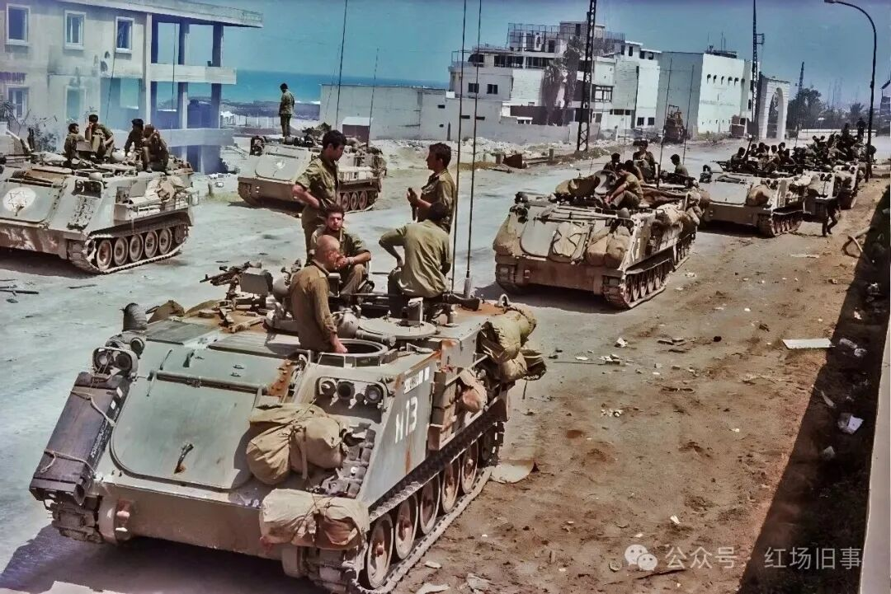
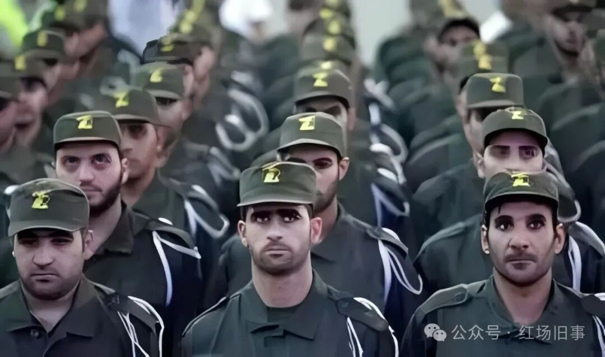
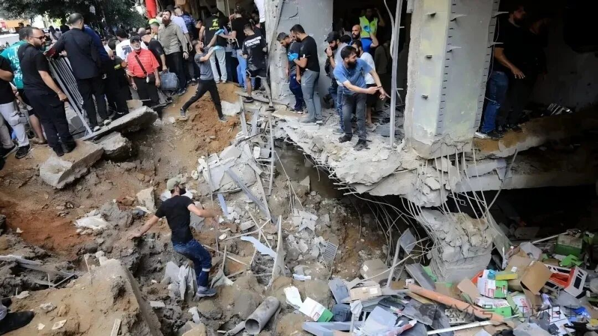
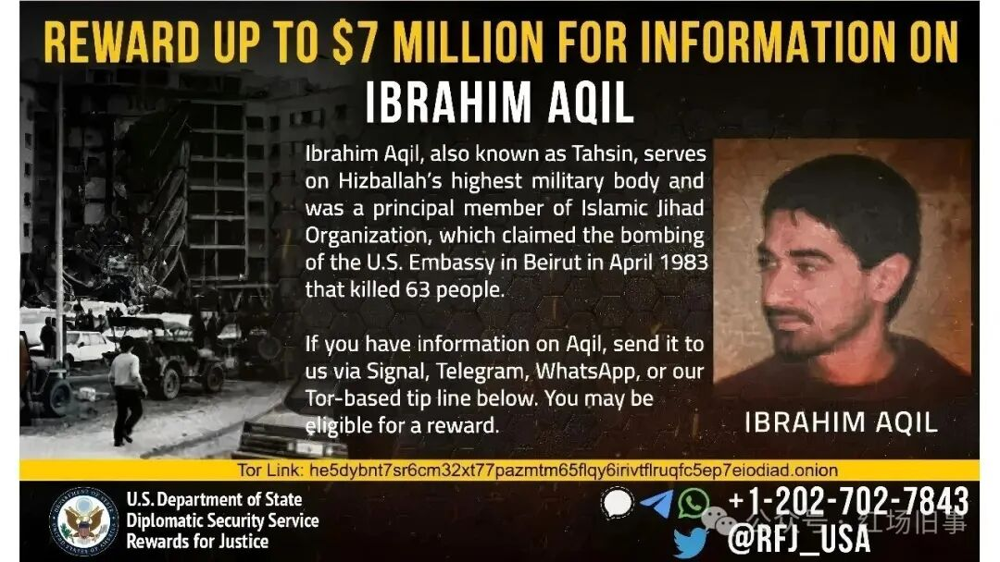

1982年6月6日，以色列发动“加利利和平行动”，10万大军越过黎巴嫩边境，直扑贝鲁特。

六天后的德黑兰，霍梅尼正在召开紧急会议。与会者中有一个人身份特殊——刚从巴黎飞来的黎巴嫩什叶派教士，法德拉。霍梅尼只问了一个问题：“你们有多少人愿意为伊斯兰革命献身？”三个月后，1500名伊朗革命卫队官兵悄然进入黎巴嫩贝卡谷地。他们带来的不只是武器和资金，更是一个改变中东格局的计划——在黎巴嫩的土地上，克隆一支伊朗革命卫队。这支力量，后来被称为“真主党”。
一、1982：以色列的“入侵”与伊朗的“机会”
1982年6月3日，伦敦街头响起枪声。持枪者刺杀了以色列驻英国大使。五天后，以色列空军轰炸贝鲁特，地面部队分三路攻入黎巴嫩，直逼首都。对以色列而言，这是一场代号“加利利和平”的有限战争，目标是消灭在黎巴嫩境内的巴解组织武装。但他们没有料到，这场战争会唤醒一个更危险的对手。战火燃起时，德黑兰的决策层看到了机会。1979年革命后，伊朗一直试图将“输出伊斯兰革命”从口号变成现实。黎巴嫩的什叶派占人口近三分之一，却长期处于政治边缘，被逊尼派精英和马龙派富商压制。战争带来的混乱，正是渗透的最佳时机。1982年6月中旬，霍梅尼在德黑兰接见了黎巴嫩什叶派代表团。根据后来解密的资料，他承诺提供一切支持——资金、武器、教官，条件只有一个：成立一支绝对效忠“法基赫监护”原则的武装力量。
二、1500名革命卫队进驻贝卡谷地
1982年夏天，1500名伊朗伊斯兰革命卫队官兵经由叙利亚进入黎巴嫩，在贝卡谷地安营扎寨。

这不是普通的军事援助。革命卫队在贝卡谷地建立了完整的训练营，从战术训练到意识形态灌输，完全复制伊朗模式。黎巴嫩当地的什叶派青年被招募进来，接受革命卫队教官的集训。真主党正式宣告成立。这个新组织的纲领从一开始就清晰而激进：消灭以色列，驱逐西方势力，在黎巴嫩建立伊斯兰共和国，效忠伊朗最高领袖。它的骨干成员几乎都在伊朗受过训练，武器装备全部由德黑兰提供，连组织结构都完全模仿革命卫队。用当时西方观察家的话说：伊朗在黎巴嫩克隆了一支自己的军队。
三、1983：震动世界的“血祭”
真主党成立后的第一件事，就是向世界宣告自己的存在。1983年4月18日，一辆装载炸药的卡车冲向美国驻贝鲁特大使馆。爆炸造成63人死亡，其中包括17名美国人。6个月后，1983年10月23日，星期日清晨。两辆卡车分别冲进美国海军陆战队军营和法国维和部队驻地。241名美军士兵和58名法军士兵在睡梦中丧生。这是“9·11”之前针对美国最致命的恐怖袭击。谁干的？美国情报部门很快锁定真主党。1997年，美国国务院正式将真主党列为外国恐怖组织。此后多年调查显示，策划和实施这些袭击的指挥官中，包括易卜拉欣·阿基勒——他后来成为真主党精锐部队“拉德万”的领导人，直到2024年9月被以色列空袭炸死在贝鲁特。

四、1985：真主党的公开宣战
经过三年秘密发展，1985年，真主党首次发表公开宣言。这份宣言毫不掩饰地宣称：美国是“头号敌人”，以色列是“必须被消灭的毒瘤”，而伊朗最高领袖霍梅尼是所有穆斯林的“效忠对象”。宣言还宣布了一项重要决定：承认伊朗的“法基赫监护”原则，即伊朗最高领袖拥有对所有什叶派事务的最终裁决权。这意味着，真主党不仅是伊朗的盟友，更是伊朗在黎巴嫩的延伸。真主党的崛起并非一帆风顺。当时黎巴嫩已有另一个什叶派政治运动“阿迈勒运动”，且长期拒绝承认“法基赫监护”。两个组织争夺同一教派的支持，一度爆发流血冲突。但伊朗的倾斜很快分出胜负——革命卫队的资金和武器源源不断流向真主党，使其迅速壮大。
五、“抵抗轴心”的成型
到20世纪80年代末，真主党已不仅是黎巴嫩内部的一支武装力量，更成为伊朗“抵抗轴心”战略的核心支柱。它在黎巴嫩南部建立起完整的军事体系，通过伊朗援助修筑地下工事、囤积火箭弹。1992年，哈桑·纳斯鲁拉接任真主党总书记，将这个组织带入一个更务实也更危险的阶段——一边参与黎巴嫩议会政治，一边继续武装对抗以色列。2000年，以色列从黎巴嫩南部撤军，真主党宣称这是“历史性胜利”，声望达到顶峰。2006年，它又挑起与以色列的第二次黎巴嫩战争，以34天的顽强抵抗赢得阿拉伯世界的广泛喝彩。此后十余年，真主党的影响力不断外溢。2012年，它派遣数千名战士进入叙利亚，协助阿萨德政权扭转战局。也门胡塞武装的军事顾问中，也频繁出现真主党成员的身影。
六、40年后的“协同作战”
2026年3月11日，伊朗伊斯兰革命卫队宣布完成“真实承诺-4”行动第40波攻势，与黎巴嫩真主党展开“联合一体化作战”，对以色列境内50多个目标发动打击。以色列国防军随后承认，这是伊朗和真主党首次对以色列发起协同打击。真主党向以色列北部发射约150枚火箭弹，伊朗则从本土发射弹道导弹直指特拉维夫。40年前，1500名伊朗革命卫队官兵秘密潜入贝卡谷地时，没人能预料到这个结局——伊朗与黎巴嫩真主党从单方面的援助关系，演变为并肩作战的军事同盟。德黑兰当年在黎巴嫩埋下的那颗“定时炸弹”，终于在40年后同时引爆。
七、悬疑：谁是下一个？
1983年，当241名美军士兵葬身贝鲁特时，美国悬赏700万美元捉拿真主党指挥官易卜拉欣·阿基勒。41年后，2024年9月，以色列的空袭终于在贝鲁特郊外找到了他。

一个悬疑解开了，但更大的问题悬而未决：真主党在黎巴嫩囤积了超过15万枚火箭弹，其中一部分已被改造为精确制导导弹。如果伊朗在核计划上取得突破，这些导弹是否会装上核弹头？而那个在1982年夏天秘密潜入贝卡谷地的革命卫队军官，如果他活到今天，看到自己的作品已经成长为中东最强大的非国家武装力量，会是怎样的心情？下期预告1992年，以色列驻阿根廷大使馆被炸，29人死亡，200余人受伤。两年后，布宜诺斯艾利斯的犹太人互助协会再次被炸，85人丧生。两起袭击的背后，都指向同一个名字：真主党。而更令人震惊的是，调查者发现，真主党的特工竟然拿着伊朗外交护照，通过外交邮袋运送炸药。当外交豁免权遇上恐怖袭击，一场全球范围的暗战就此拉开序幕。
下一集《中东风云：跨越洲际的暗杀——真主党的全球足迹》，我们揭开阿根廷爆炸案背后，那场改变国际反恐格局的秘密战争。
中东风云｜第一集 波斯帝国的“犹太人救赎”——2500年前的伏笔
中东风云｜第二集 从“兄弟”到“死敌”：1979年之前，伊朗和以色列有多铁？
文字与图片版权归各自权利人所有；排版根据抓取内容整理。